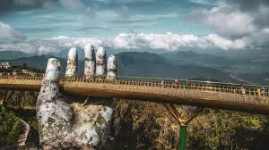

Vietnam's Golden Bridge: Where a Giant's Hand Meets the Sky
That moment I stepped onto that bridge is a memory I'll never forget. Imagine being suspended over a thousand meters in the air, enveloped by mist that drifts in and out, finding yourself on a golden walkway—a true ribbon of silk strung across the sky. The most incredible part is its architecture: it's cradled by a giant stone hand that dramatically emerges from the mountain, seemingly holding it up effortlessly. It's a breathtaking piece of design, with the weathered rock looking as if it has been there for centuries, safeguarding your path. This isn't just a bridge; it's a journey into the botanical paradise of Da Nang, Vietnam. The walkway is lined with purple flowers, creating a perfect, vibrant contrast against the structure's gold and the deep green of the hills below. Every step is a stunning viewpoint, and when the skies are clear, the coastal panorama is simply beyond words. If you love unique places and capturing incredible photographs, this is a must-see. Go at sunrise to experience the magic of the sun breaking through the giant's fingers, or in the late afternoon for a sunset you won't forget. It's an experience that truly makes you feel like you are walking on the clouds, protected by a benevolent titan.
Torna a gli articoli